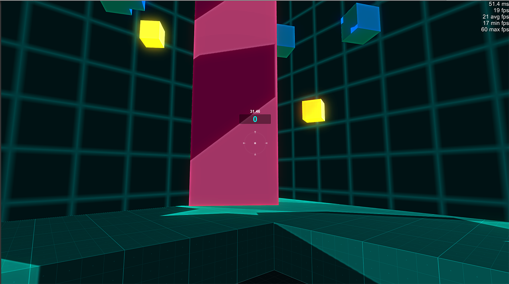
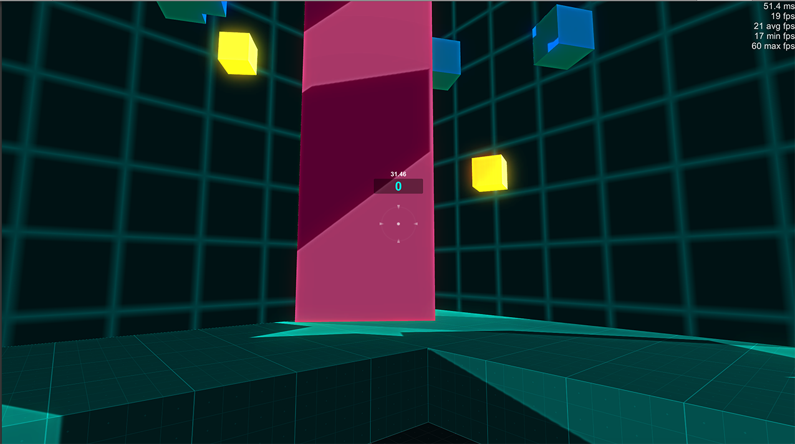

My Projects
My name is Eldon Gonio. I am a Digital Media student and an Indie Game Developer living in Toronto. I am currently in Year 5 of York University's Digital Media program.
Here is my work:
Last Of Light
Rogue-like action platformer game with pseudo-random generated elements created for EECS4700 Digital Media Capstone at Yorku
Last of Light (2016) is a rogue-like action platformer game with procedurally generated elements. Players play as a wisp of light. Their goal is to collect the last remnants of light while trying to desperately survive in a world overcome by darkness.
The game consists of five rooms. Each room will consist of a randomly selected platform preset, as well as randomly generated enemies and power-ups that will spawn continuously. Each room will also contain one big light orb. The player must collect all five orbs in order to win the game.
Last of Light focuses on delivering its entire experience to the player through short playing sessions and high replay value due to its procedural generated elements.
Showcased at Level Up Exibition 2016
Created in Gamemaker Studio and Spriter Pro.
Contributors: Eldon Gonio and Alexei Sizov
Download Link (Windows Only)Despair
Point and Click Horror/Mystery Game created for DATT3936 Designing Interactive Objects II at Yorku
Despair (2014) is an interactive horror/mystery story that focuses on psychological horror, a sub-genre of horror that relies on the character’s fears and emotional instability to create tension.
The player will be in the first person view of the character “the doctor”. The doctor arrives to an old and abandoned building that he doesn’t remember or know. The player will have to investigate the building by going through rooms and interacting with clues, uncovering the truth behind the protagonist’s dark past.
Created in Stencyl.
Contributors: Eldon Gonio and Alexei Sizov
Download Link (Flash)Rollerball Madness
Arcade Game created for a Course Specialization by Michigan State University.
Rollerball Madness is an arcade game where players will have to collect coins and avoid enemies.
It demonstrates the understanding of using standard assets, creating prefabs, using physics, creating a complex game system through the use of pre-created scripts, creating basic user interface elements, creating basic particle systems, creating basic keyframe animations, building the project, and packaging the project.
Created using Unity and its Standard Assests
Box Shooter
 


FPS game created for a Coursera Specialization by Michigan State University.
Box Shooter is a FPS game where players will have to shoot boxes which corresponds to either points, time up or time down.
The game demonstrates the understanding of the creating a complex game system through the use of custom written scripts in C#, using code to dynamically modify gameObjects and components, creating user interface elements, creating visual polish through the use of particles, effects, and animations, triggering animations through code and the animator, building the project, and packaging the project for sharing.
Create`d using Unity and its Standard Assests
Beat It
Rhythm Game created for FACS 2936 Designing Interactive Objects I at Yorku
Beat It (2013) is a Rhythm game based on a popular freeware rhythm game Osu. The game's aethetics follows a popular Japanese Culture Animes. It features the following animes and it's main theme songs.
- Sword Art Online: Crossing Field
- Danganronpa: Hero Chiryouyaki
- Clannad - Dango Daikozoku
- Noragami: Goya No Machiawase
- Guilty Crown: My Dearest
Created in Max7.
Contributors: Eldon Gonio, Alexei Sizov and Jeffrey Kwan
Pentaphony
Optical Poem created for FACS 2935 Media Signal Processing at Yorku
Pentaphony (2013) is an optical poem inspired by Oskar Fischinger's optical poem 1938. Pentaphony consist of 5 different songs from various sources such as Silent Hill, Death Note, Final Fantasy XIII and songs.
Created in Max7.
Roshambo
Interactive installation built for DATT 2010 Physical Computing II at YorkU
Primary tasks: schematics, assembly, presentation
Roshambo (2015) is an interactive installation that consists of three autonomous robots named Flux, Lucent, and Resonant. Each robot has a special trait that it uses to vie for the audience's attention and a sensory weakness that will temporarily disable it. The trait of one robot is the weakness of another, just like in a game of roshambo i.e. rock-paper-scissors.
Roshambo deconstructs the convention of passive installation art by making the robots seek out the audience. The work examines emergent media consumption patterns and contemporary technologies through each robot's snowflake personality. All three robots contain custom made circuit boards.
Showcased at Digital Media Exhibition 2015 and CANVAS 2015
Created in Arduino and Max 7.
Contributors: Eldon Gonio, Alexei Sizov and Keke Zhou
Contact
Email: eldon.gonio@gmail.com
LinkedIn: Here
Phone: (416)-274-6176